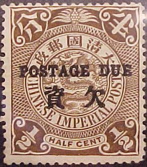
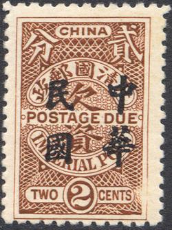
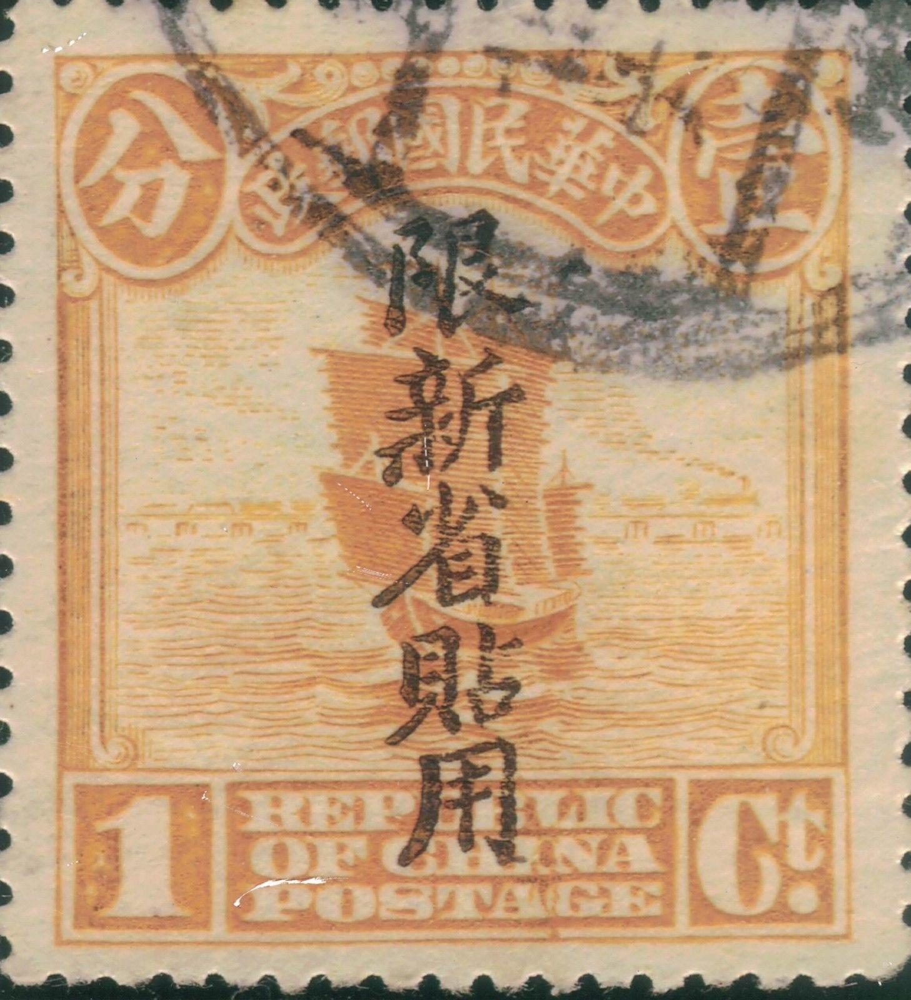

Return To Catalogue - Older issues
Note: on my website many of the
pictures can not be seen! They are of course present in the
catalogue;
contact me if you want to purchase it.
1/2 c brown 1 c yellow 2 c red 4 c brown 5 c red 10 c green
Value of the stamps |
|||
vc = very common c = common * = not so common ** = uncommon |
*** = very uncommon R = rare RR = very rare RRR = extremely rare |
||
| Value | Unused | Used | Remarks |
| 1/2 c | * | * | |
| 1 c | * | * | |
| 2 c | * | * | |
| 4 c | * | * | |
| 5 c | * | * | |
| 10 c | * | * | |
Forged "POSTAGE DUE" overprints exist, example:


(Forged overprints)

1/2 c blue 1 c blue 1 c brown 2 c blue 2 c brown 4 c blue 5 c blue 10 c blue 20 c blue 30 c blue With overprint 'Republic China' in chinese characters in red (as for the postage stamps of that period)

1/2 c blue 1 c brown 2 c brown 4 c blue (overprint in blue exists) 5 c blue 5 c brown (inverted overprint exists) 10 c blue (overprint in blue exists) 20 c blue 30 c blue Overprint in two lines of chinese characters

(2 c with double lined Chinese overprint)
1/2 c blue 1/2 c brown 1 c brown 2 c brown 4 c blue 5 c brown 10 c blue 20 c brown 30 c blue
These stamps are perforated 14. Some very rare overprints exist with the word 'Neutrality' applied on the stamps which bear already the 'Republic of China' overprint (as in the postage stamps of that area, forged overprints exist!). The values 1/2 c brown, 1 c blue, 2 c brown, 4 c blue, 5 c blue, 10 c blue, 20 c blue and 30 c blue exist with this additional overprint. Example os such an overprint (I don't know if this one is genuine or not):
(Additional 'Neutrality' overprint, reduced size)
Value of the stamps |
|||
vc = very common c = common * = not so common ** = uncommon |
*** = very uncommon R = rare RR = very rare RRR = extremely rare |
||
| Value | Unused | Used | Remarks |
| 1/2 c | * | * | |
| 1 c blue | * | * | |
| 1 c brown | * | * | |
| 2 c blue | * | * | |
| 2 c brown | ** | ** | |
| 4 c | * | * | |
| 5 c | * | * | |
| 10 c | * | * | |
| 20 c | *** | ** | |
| 30 c | *** | *** | |
| Overprinted 'Republic China' (in chinese) | |||
| 1/2 c | * | * | |
| 1 c | * | * | |
| 2 c | * | * | |
| 4 c | * | * | Overprint in blue: RR |
| 5 c blue | RR | RR | |
| 5 c brown | * | * | Inverted overprint: RR |
| 10 c | ** | ** | |
| 20 c | *** | *** | |
| 30 c | *** | *** | |
| With additional 'Neutrality' overprint | |||
| All values | RRR | RRR | |
| Overprinted in two lines of Chinese characters | |||
| 1/2 c blue | *** | ** | |
| 1/2 c brown | * | * | |
| 1 c | * | * | |
| 2 c | * | * | |
| 4 c | * | * | |
| 5 c | * | * | |
| 10 c | ** | ** | |
| 20 c | *** | *** | |
| 30 c | *** | *** | |

1/2 c blue 1 c blue 2 c blue 4 c blue 5 c blue 10 c blue 20 c blue 30 c blue
These stamps have perforation 14.
Value of the stamps |
|||
vc = very common c = common * = not so common ** = uncommon |
*** = very uncommon R = rare RR = very rare RRR = extremely rare |
||
| Value | Unused | Used | Remarks |
| 1/2 c | c | c | |
| 1 c | c | c | |
| 2 c | c | c | |
| 4 c | c | c | |
| 5 c | * | * | |
| 10 c | * | * | |
| 20 c | * | * | |
| 30 c | ** | ** | |

1/2 c orange 1 c orange 2 c orange 4 c orange 5 c orange 10 c orange 20 c orange 30 c orange
(Reduced sizes)
1/2 c brown 1 c orange 1 1/2 c violet 2 c green 3 c green 4 c red 5 c lilac 6 c grey 7 c violet 8 c orange 10 c blue 13 c brown 15 c brown 16 c olive 20 c red 30 c lilac 50 c green 1 $ brown and black (red overprint) 2 $ blue and black 5 $ red and black 10 $ green and black 20 $ yellow and black
Value of the stamps |
|||
vc = very common c = common * = not so common ** = uncommon |
*** = very uncommon R = rare RR = very rare RRR = extremely rare |
||
| Value | Unused | Used | Remarks |
| 1/2 c | * | * | |
| 1 c | * | c | |
| 1 1/2 c | *** | *** | |
| 2 c | * | * | |
| 3 c | * | * | |
| 4 c | * | * | |
| 5 c | * | * | |
| 6 c | ** | * | |
| 7 c | *** | *** | |
| 8 c | ** | * | |
| 10 c | ** | * | |
| 13 c | *** | ** | |
| 15 c | *** | *** | |
| 16 c | *** | *** | |
| 20 c | *** | * | |
| 30 c | *** | ** | |
| 50 c | *** | ** | |
| 1 $ | *** | *** | |
| 2 $ | *** | *** | |
| 5 $ | R | R | |
| 10 $ | RR | RR | |
| 20 $ | RR | RR | |
This overprint has been forged, example:

(Forged Sinkiang overprint)

Forged overprint made by Gee Ma in the 1950's in Australia. Gee
Ma (David Allen Gee) made forgeries of rare overprints and
cancels from China, Tibet, Burma, Japanese occupation of several
countries etc. Gee Ma also operated under false names among them:
James Bond, Robert Lowe, Dr.K.Hayes, Peter Dierking and Kee On
Yu.
More overprints were made after 1920 for this province.
(Reduced size)
Value of the stamps |
|||
vc = very common c = common * = not so common ** = uncommon |
*** = very uncommon R = rare RR = very rare RRR = extremely rare |
||
| Value | Unused | Used | Remarks |
| 2 c | - | RR | |
Forgeries exist, example:
Forgery
15 c green and black 30 c red and black 45 c violet and black 60 c blue and black 90 c olive and black
These stamps were re-issued in 1929 in slightly different design (tail of the aeroplane is different).
15 green 25 orange 30 red 45 lilac 50 brown 60 blue 90 olive 1.00 green 2.00 brown 5.00 red Overprinted in Chinese and surcharged with new value (1946) 23.00 on 30 red 53.00 on 15 green 73.00 on 25 orange 100.00 on 2.00 brown 200.00 on 5.00 red Inflation overprintes (1948); overprinted in Chinese as well, crosses on old value 10000.00 on 30 red 20000.00 on 25 orange 30000.00 on 90 olive (overprint and surcharge in red) 50000.00 on 60 blue (overprint and surcharge in red) 50000.00 on 1.00 green (overprint and surcharge in red)
With overprint for Manchuria. I've seen
this overprint (always in red) on the values 15 green, 25 orange,
30 red, 45 lilac, 50 brown, 60 blue, 90 olive and 1.00 green.
27.00 blue Overprinted in Chinese and surcharged with new value (1946) 10000.00 on 27.00 blue
I have seen the values 0f10 green on green, 0f20 blue on blue, 0f30 brown on yellow and 0f40 red on lilac. The value 2 F violet on lilac should also exist. The value inscription is always in the colour red.
These labels were first issued in 1899 with inscription 'CHINESE IMPERIAL POST'.
Two different types
Example:
Examples:

('CHINESE REVENUE ONE THOUSAND CASH')
100 Cash, I've seen this stamp with several red and black Chinese
overprints

I've seen the following values: 1 c brown, 5 c green, 10 c red, 50 c blue, $1 orange and $5 violet.
'CHINA INTERNATIONAL FAMINE RELIEF FUND' 1 c blue and red.

{kind=link}
{kind=link}
{kind=link}
{kind=link}
{kind=link}